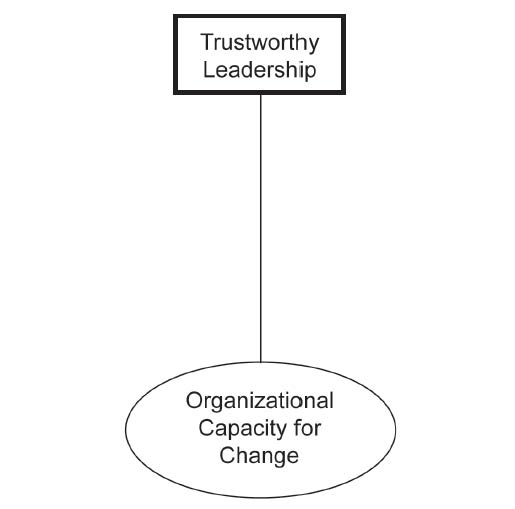

There is no recipe or formula for building trustworthy leadership within an organization. Human beings are too variable for a recipe and human relationships come in all shapes and sizes. After all, leadership development is an “inside job” that requires character development, and character development was the focus of a previous book of mine.Judge (1999). However, there are some behavioral principles for those individuals and organizations seeking to make their organizations more change capable.
Leadership takes skill and all skills can be developed over time. Without previous experiences in leading others through a change initiative, it is not possible to become a trustworthy leader.McCall, Lombardo, & Morrison (1988). Hence, anything that an organization can do to accelerate and enhance the leadership skills of its managers will yield long-term benefits in also enhancing the organization’s capacity to change.Tichy and Cohen (1997).
However, having a formal leadership development program is not enough to generate skillful leaders. In a recent review of these programs at eight major corporations, the differentiating factor that separated the successful programs from the unsuccessful programs was whether or not personal follow-up was part of the program or not. Personal follow-up involved such things as reminder notes to keep working on the development plan, one-on-one sessions with an executive coach or peer, and sufficient time and resources to work on important attitudes and behaviors unfolding in real time. In other words, leadership development is a contact sport.Goldsmith and Morgan (2003).
One of the problems with much that has been written about leadership and communication is that too much has been focused on telling the rest of the organization what the leader wants to do and helping to persuade the organization that resistance to change is a bad idea. This is only part of what is required. In order to build the leader–follower relationship, time and energy must be invested so that fears, concerns, and doubts can be expressed, alternative viewpoints can be discussed, and challenges to the vision can be articulated.
Most change initiatives fail because they do not consider the emotional aspects associated with change, and trustworthy leadership that communicates well can be an important antidote to counteract that obstacle to change. Indeed, noted author and change guru John Kotter argues that it is important to understand what people are feeling and to speak more directly to their anxieties, confusion, anger, and distrust.Kotter and Cohen (2002).
Interestingly, recent research reveals that the more communication that goes on between executives, the more trustworthy the communicators view each other to be. In a study of 50 senior managers within a multinational firm, it was reported that those executives who communicated more often were more likely to view others in the organization as more trustworthy.Becerra and Gupta (1999). Perhaps this is why interactive communication forums such as town hall meetings, online blogs, and two-way video sessions are becoming staples of organizational life.
A key element of trustworthiness is consistency over time. The best way to be consistent is to know your values and act in concert with those values. If the leader or leaders are not clear about what their values are and what values they want to emphasize within the organization, they are likely to send out mixed messages to the rest of the organization.
Subordinates pay attention to what leaders say and do. When the message changes, or more importantly, when the message stays the same and the leader’s actions are not consistent with that message, trust is destroyed. One of the key factors noted in Ford’s recent success as compared to General Motors’s and Chrysler’s struggles was described as “talking the walk, and walking the talk.”Drickhamer (2004). In other words, Ford executives were able to build up more trust with their employees than executives at the other Detroit firms. Knowing your values and acting consistently with them is harder to do than one would think, but building trust in the absence of consistency between espoused and enacted values is virtually impossible.
If employees are to trust their leaders, they need to know that their leaders genuinely care about them. This doesn’t mean that the leader must avoid conflicts and “play nice” all the time. It does mean that employees know that the leaders of the organization are not just in the game for themselves. Pragmatically speaking, leaders must seek win-win options as much as possible and employees need to know that the leader is looking to create a win for them.Covey (1989). In other words, followers want to know that you care about them before they are willing to trust you and follow you. Kouzes (2005).
Interestingly, organizations that went from being good to great were all led by relatively humble leaders who were more focused on building the organization than on their own well-being. Humility is not a traditional aspect used to describe effective leaders, but it is consistent with generating the organizational trust necessary to pursue a bold new vision, change initiative, or both. In sum, caring about the well-being of the entire organization and putting its well-being on a par with your own is essential for building organizational change capacity.
Because the building of a trusting relationship takes time, it is not a one-time event. While we live in a society that is very unforgiving of mistakes, in order to build trust within an organization, it is more important to be authentic and human than it is to be perfect. When a mistake is made by a leader, it should be owned and acknowledged. Sometimes that acknowledgment needs to be made public; sometimes it needs to be private. The following quote is instructive in this regard:
Apologies can create the conditions for constructive change. An apology can also serve to strengthen an organization. Apologizing by admitting a mistake—to co-workers, employees, customers, clients, the public at large—tends to gain credibility and generate confidence in one’s leadership…To apologize is to comprehend and acknowledge one’s error, to act justly; it requires that the truth be told without minimizing or rationalizing the behavior.Stamato (2008), p. 1.
Part of authenticity is being candid and transparent. However, leaders should selectively reveal their weaknesses since too much disclosure can be inappropriate in certain times and places.Goffee and Jones (2000). In other words, it is possible to overdo this candor and undermine one’s trustworthiness.
As this chapter suggests, organizational leaders need to earn the trust and respect of their followers. However, this does not mean that leaders need to be friends with their coworkers. Friendship at work is a wonderful thing, but far more important is the respect that others have for the leadership of the organization.
Respect is earned through being fair and just. And fairness applies to not only what the policy is but also how the policy is implemented. Indeed, recent research found that employee openness to change was even more influenced by how justly the policy was implemented than by how fair the policy was perceived to be in actual substance.Chawla and Kelloway (2004).
Relationships are reciprocal in nature. There must be give and take for them to work properly. If leaders want the organization to trust them, then they must learn to trust the organization. While this prospect can be terrifying to some leaders with their fixation on control and predictability, it is an essential ingredient to building organizational capacity for change.
I personally had to deal with this issue myself recently. My 12-year-old daughter and a friend of hers and I visited the boardwalk in Virginia Beach where we live. The girls wanted to rent a four-person bicycle and so we did just that. Being the most experienced driver in the group, I assumed the steering role at the front left-hand side of the bicycle. However, after a few minutes, I offered to let my daughter steer the vehicle on the bicycle path. I made that offer with some trepidation knowing that her eye–hand coordination was not very developed and her ability to focus left much to be desired. Furthermore, the bikeway was quite crowded with other bicycles and many pedestrians nearby. However, I wanted her to learn to trust her driving ability and to know that I trusted her, so I made the offer. She readily accepted, and sure enough, the bicycle careened off the bike path into a bush in a few minutes when someone unexpectedly stepped in front. However, I kept my mouth shut and we did it again and she did much better the second time. Notably, my daughter said this was the highlight of our trip to the beach, and she seemed to walk a little taller and prouder after this little experiment.
Of course, the consequences of driving a bicycle off the path are not as bad as driving an organization off the path, so my personal example is rather trivial compared with trusting others to “step up” within an organization. However, the principles are the same and the outcome is illustrative. Overall, having a balance between trust and control is essential for building organizational trust. Figure 3.1 "The First Dimension of Organizational Capacity for Change: Trustworthy Leadership" contains a graphical summary of the first dimension of organizational capacity for change.
Figure 3.1 The First Dimension of Organizational Capacity for Change: Trustworthy Leadership
